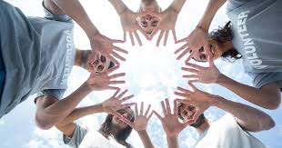

Transformamos solidariedade em ação, promovendo oportunidades e dignidade para comunidades em situação de vulnerabilidade.
Junte-se a nós.
seja voluntário, doador ou acompanhe nosso trabalho.
Cadastre-seAMIGOS DO BEM
-

Educação para Todos
Programa de reforço escolar e formação profissional.
-

Saúde Comunitária
Campanhas de prevenção com foco em comunidades vulneráveis.